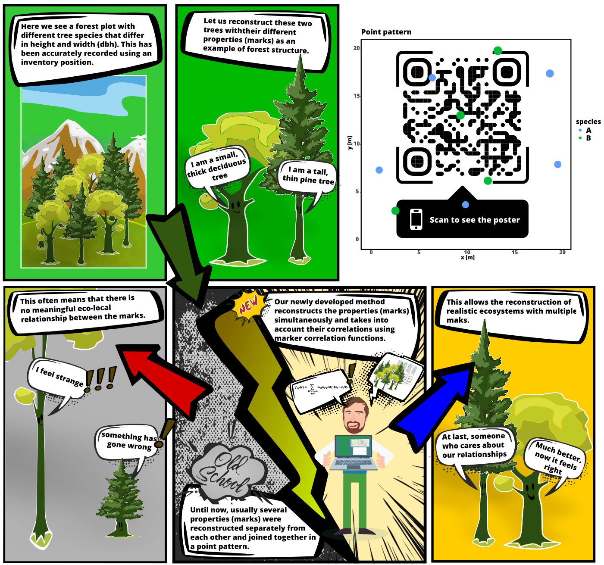

1 Introduction
Multi-Trait Point Pattern Reconstruction (MTPPR) is a statistical method used to analyze and reconstruct spatial patterns. Unlike traditional methods, MTPPR enables the reconstruction of spatial point distributions while considering multiple associated traits (marks). Previous methods for reconstructing point patterns either only consider a single mark or multiple marks independently, neglecting their correlations. MTPPR employs various second-order summary statistics of point pattern analysis, such as the pair correlation function and the mark correlation function.
Figure: This illustration depicts the issue in reconstructing dot patterns where the correlations between the marks are not considered. This results in unrealistic proportions, as illustrated here by the disproportionate trees.

This method is crucial in fields like ecology, biology, and geography, where understanding the spatial distribution of entities and their traits is essential. By considering both the spatial locations and the various traits of points, MTPPR allows users to uncover complex interactions and dependencies that influence the arrangement and dynamics of the systems under study.
For example, in ecology, MTPPR can be used to reconstruct the distribution of different tree species in a forest, taking into account attributes such as age, height, and health status. This provides insights into ecological processes such as competition, habitat preferences, and the impact of environmental factors. Similarly, in epidemiology, MTPPR can help understand the spread of diseases by correlating spatial data with demographic and environmental traits.
Key Concepts
Point Patterns:
Spatial data points representing the positions of objects or events within a defined area
Examples: Locations of trees in a forest, distribution of animal burrows, spread of disease cases
Traits:
Additional attributes or characteristics associated with each point
Examples: Tree species, age, height, health status
Multi-Trait Analysis:
Simultaneous consideration of multiple attributes to understand their influence on spatial arrangement
Can reveal complex interactions and dependencies between traits
Reconstruction:
Generation of statistically similar point patterns for various applications through reconstruction algorithms
Examples: Creating null model patterns for spatial point pattern analysis and constructing artificial datasets suitable for initializing forest ABMs and other stand simulators
Steps in MTPPR
Data Collection:
- Gathering spatial data along with associated traits through field surveys, remote sensing, or other methods
Spatial Analysis:
Analyzing the spatial arrangement of points using techniques such as Ripley’s K-function, pair correlation function, or spatial autocorrelation
Assessing the distribution (clustered, random, regular) and the influence of spatial scale
Trait Analysis:
- Evaluating the distribution and correlation of traits using methods like the mark correlation function
Model Construction:
Developing models that integrate spatial and trait information using statistical models (e.g., spatial point process models)
Aim: Reconstructing the underlying processes leading to the observed multi-trait point pattern
Reconstruction and Validation:
Reconstructing point patterns based on the developed models to predict spatial arrangements under various scenarios
Validating models by comparing simulated patterns with actual observations
Interpretation:
- Interpreting results to gain insights into ecological, biological, or geographical processes
Applications
Ecology:
Generating realistic and statistically similar spatial patterns
Understanding the coexistence and competition among plant species
Studying the spatial distribution of animal populations and their habitat preferences
Epidemiology:
- Analyzing the spread of diseases based on environmental factors and population characteristics
Urban Planning:
- Assessing the spatial distribution of urban features (e.g., green spaces, buildings) and their associated traits (e.g., building types, land use)